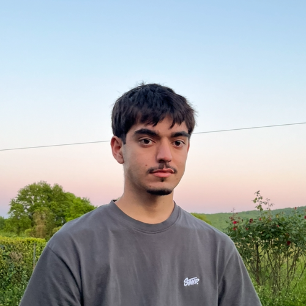

Paul Bernat
"Passionné par l'innovation, la conception électronique, l'entreprenariat et l'automatisme, j'aime donner vie à des systèmes complexes. Mon parcours allie rigueur scientifique et projets concrets, avec une forte volonté de m'impliquer dans des défis technologiques porteurs de sens.
Mes Savoir-être
Au-delà de mes compétences techniques, j'attache une grande importance à la méthode et au travail collaboratif :
Mon Parcours Scolaire
1ère année de BUT GEII
Apprentissage approfondi en génie électrique, automatisme, énergie et informatique industrielle.
Temps forts : Rédaction de dossiers techniques (DDC, DDV, DDF) et réalisation de multiples projets transversaux en équipe (Rafale lumineux, projet SafeBaby...).
Obtention du Baccalauréat Général
Mention Assez Bien.
Spécialités de Terminale : Mathématiques et NSI (Numérique et Sciences Informatiques).
Classe de Première Générale
Développement d'un solide socle scientifique.
Spécialités suivies : Mathématiques, Physique-Chimie, et NSI.
Diplôme National du Brevet
Mention Très Bien.